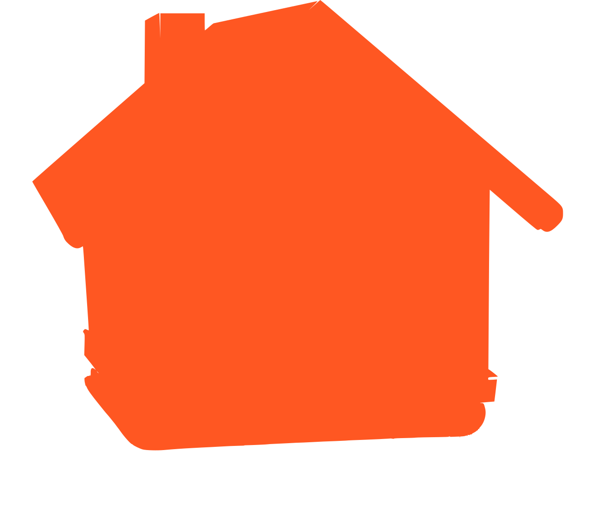

descubre más lugares
entretenidos aquí
Marinilla es un lugar con una belleza inigualable que vale la pena descubrir, su belleza y amabilidad de sus habitantes es una fantasía. ¡Llegaste al lugar indicado!
Marinilla es un lugar con una belleza inigualable que vale la pena descubrir, su belleza y amabilidad de sus habitantes es una fantasía. ¡Llegaste al lugar indicado!
Hay una gran variedad de sitios con deliciosas comidas para saciar tu hambre, no solo lugares de lujo, sino también lugares de deliciosa comida callejera para calmar tus antojos .

Contamos con establecimientos donde podrás relajarte y pasar un rato de descanso agradable, contando con una avariedad en sus valores y ubicaciones. RELAJARTE NO SERÁ UN PROBLEMA.
Se tienen lugares con un ambiente suave y agradable para conversar y pasar un rato con tus amigos, los cuales cuentan con un excelente servicio y atención a sus clientes.
En este maravilloso pueblo contamos con lugares para intereses personales, ya sea que desees lugares calmados, con buenas vibras o si a lo mejor prefieres lugares más ruidosos y con ambientes más fuertes.